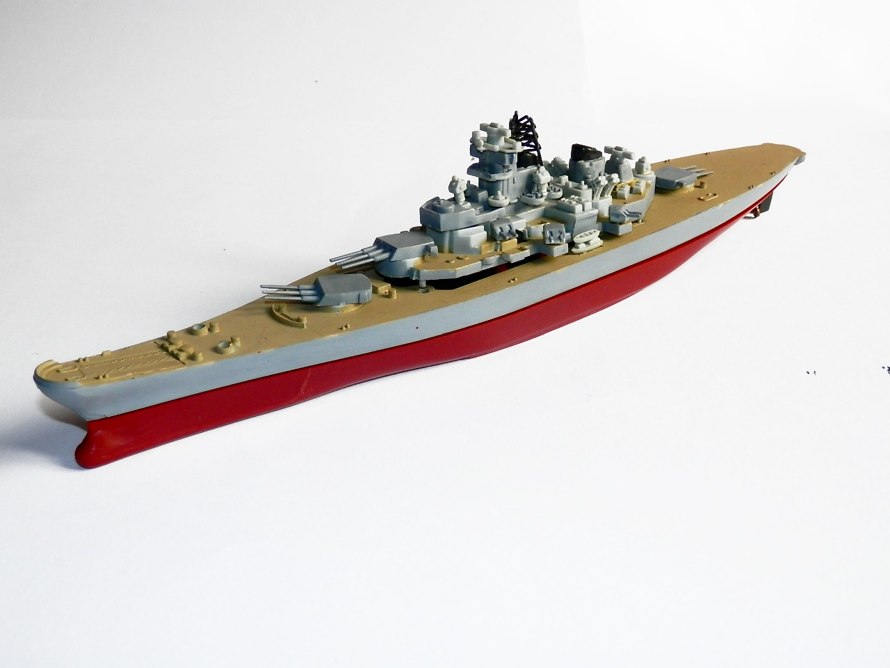
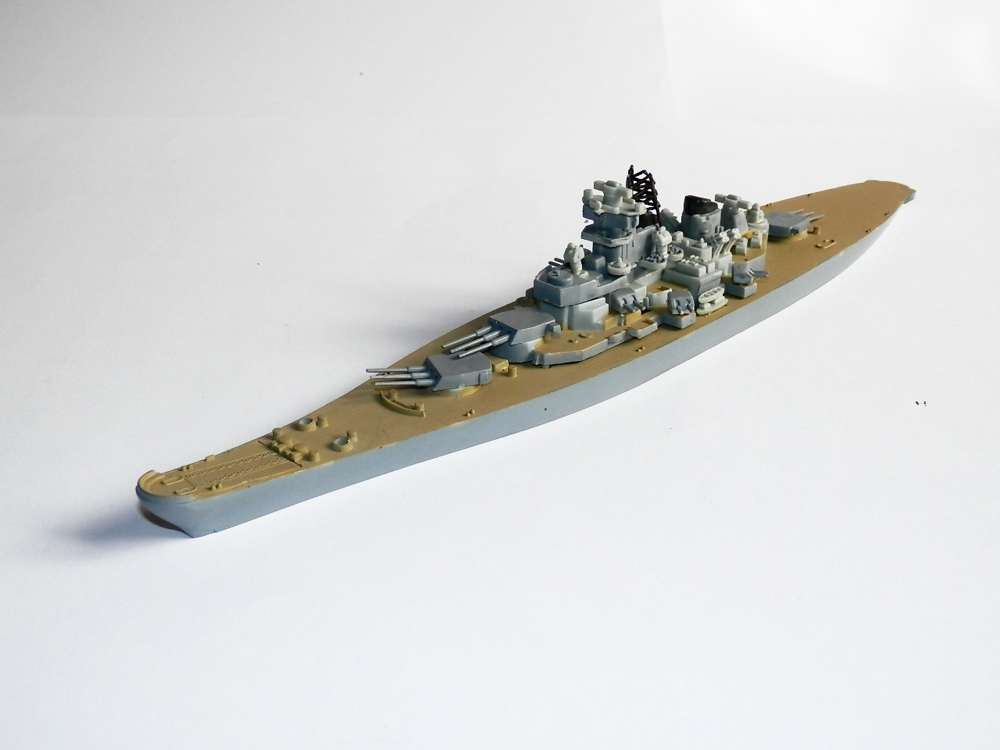
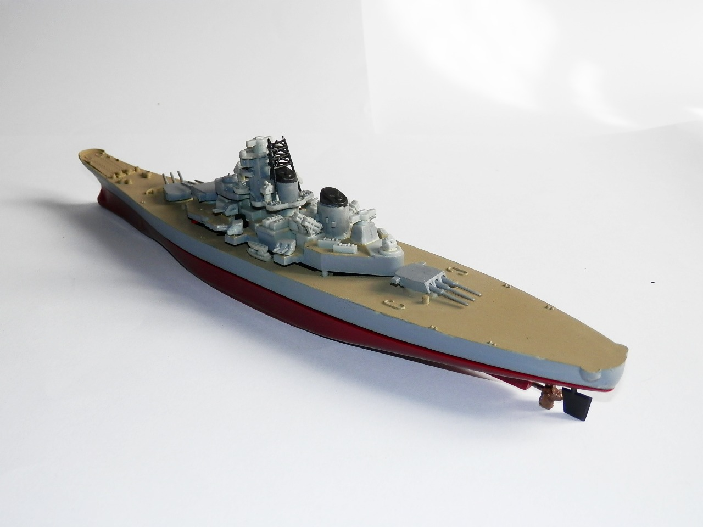

Navi · scale model archive
Iowa class battleship
Iowa class battleship — Kit: unknown, Scale: unknown. Old far east kit, motorized, both null and waterline

Photo gallery


English description
Old far east kit, motorized, both null and waterline
Descrizione italiana
Vecchio kit dell’Estremo Oriente, motorizzato, sia a scafo intero sia waterline.